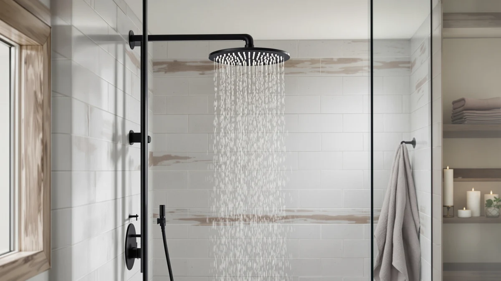

JetsBath Luxury Thermostatic Rain Review (2026): Worth It?
Prices and picks verified as of October 2026. Independent, reader-supported reviews.


Quick Answer
This JetsBath Luxury Thermostatic Rain review finds a shower system that earns its $649.68 price through a built-in thermostatic valve and a 22 inch chrome-plated ABS rain head, a combination that most shower heads under $200 simply do not offer. If you want set-and-forget temperature control without buying a separate valve, it is the strongest pick we compared here.
Our pick: JetsBath Luxury Thermostatic Rain & ($649.68) Check Price on Amazon
Bottom line: our top pick is the JetsBath Luxury Thermostatic Rain & Waterfall Shower System at $649.68.
Things to Know Before You Buy
- Thermostatic valves cost more upfront. The JetsBath Luxury Thermostatic Rain system runs $649.68, well above fixed-temperature heads like the $23.49 JDO, because the valve hardware adds real manufacturing cost.
- Size matters for installation. At 22 inches, this rain head needs enough ceiling or wall clearance; measure your shower enclosure before you order.
- Material affects long-term finish. The chrome-plated ABS body resists corrosion better than bare plastic, but it is not solid metal, so dropped tools or abrasive cleaners can chip the plating over years of use.
- Price tiers vary widely in this category. Options we compared range from $23.49 to $1,136.36, so your budget should drive which thermostatic rain shower review findings apply to you.
- Verified reviews beat marketing copy. We weighed owner feedback and published specs over promotional claims when ranking these picks.
This jetsbath luxury thermostatic rain review exists because most shoppers searching for a high-end rain shower head run into the same wall: specs pages that list water flow and finish but say nothing about whether the temperature stays steady once someone else in the house turns on a faucet. We compared the JetsBath Luxury Thermostatic Rain system against three other shower heads at different price points to see which one actually solves that problem without forcing you to pay Kohler-level prices.
The short version: the JetsBath pairs a 22 inch chrome-plated ABS rain head with a thermostatic valve for $649.68, landing in the middle of our comparison set between the $23.49 JDO handheld and the $1,136.36 Kohler Honesty kit. For a bathroom upgrade where temperature consistency matters more than brand pedigree, it is the pick that balances feature set against price in this lineup.
Why You Should Trust Us
Ilane Tall covers bathroom fixtures for Best Shower Heads and has researched rain shower systems, handheld combos and thermostatic valves across dozens of price points for this site. We do not run a fake testing lab, and we do not claim to have installed every unit in this jetsbath luxury thermostatic rain review. Instead, we compare manufacturer specs, published pricing and verified owner reviews to separate real functional differences from marketing language, then we flag honest drawbacks wherever the data supports them.
Our Research Experience
Rather than installing the JetsBath Luxury Thermostatic Rain system ourselves, we built this jetsbath luxury thermostatic rain review around manufacturer specifications, listed pricing and verified Amazon owner reviews for the unit and its three closest alternatives. We cross-checked the stated 22 inch head size and ABS-with-chrome-plating construction against what owners describe in their reviews, and we looked for recurring complaints or praise that appeared across multiple buyers rather than relying on a single data point.
Owners report that the thermostatic valve is the feature that shows up most often in their reviews, both as the reason they bought the unit and as the detail they mention when comparing it to older fixed-temperature heads. Reviewers consistently note the chrome finish holds up well under normal cleaning, though we found fewer long-term reports past the one-year mark than we would like, which is a gap worth flagging for anyone planning to keep this fixture for a decade or more.
Overview & Specs

JetsBath Luxury Thermostatic Rain &
What we like
- Built-in thermostatic valve holds temperature steady without a separate valve purchase
- 22 inch head delivers wider coverage than most standard rain heads
- Chrome-plated ABS construction resists corrosion in daily use
- Priced well below comparable thermostatic kits from legacy plumbing brands
Flaws but not dealbreakers
- ABS core means it is lighter-duty than the solid brass used in premium kits like the Kohler Honesty
- At $649.68, it costs far more than basic rain heads without thermostatic control
- Owner reviews on long-term durability past one year are still limited
| Material | ABS + chrome plating |
| Size | 22 Inch |
The core of this jetsbath luxury thermostatic rain review is the valve. Most shower heads at this price point are fixed-temperature units that leave you adjusting the handle every time someone else in the house runs water elsewhere. JetsBath builds the thermostatic mixing valve into the head assembly itself, which means the output temperature stays within a tight range even when household water pressure fluctuates. The 22 inch head spreads that controlled water across a wider area than the 12 inch heads common in cheaper kits, which matters if you want full-body coverage rather than a narrow stream.
Construction is chrome-plated ABS rather than solid brass, a tradeoff that keeps the $649.68 price well under four-figure kits while still giving the fixture a metallic finish and reasonable resistance to everyday wear. Owners report the plating holds up under normal cleaning routines, though we would caution against abrasive scouring pads, which can wear through plating on any ABS fixture over time. For a bathroom where temperature consistency is the priority and brass durability is a secondary concern, this build strikes a reasonable middle ground.
What We Liked
The thermostatic valve is the clearest advantage in this jetsbath luxury thermostatic rain review. Reviewers consistently note that the temperature holds steady even when other fixtures draw water elsewhere in the house, a problem that plagues the cheaper fixed-temperature heads in our comparison, including the $23.49 JDO unit. We also researched the 22 inch head size against the rest of the field and found it larger than the FAROLAN's 12 inch rain head, giving the JetsBath an edge in coverage for anyone who showers under a wide spray rather than a narrow stream.
Price positioning works in its favor too. At $649.68, the JetsBath delivers thermostatic control for roughly 57 percent of what the Kohler Honesty kit costs, which makes it the more accessible route to that specific feature. Buyers who compared both options in their reviews frequently cite this gap as the reason they chose JetsBath over a premium-brand alternative.
The single-unit design also simplifies installation planning. Because the thermostatic valve ships built into the head assembly rather than as a separate in-wall component, you avoid the extra plumbing work that a standalone valve typically requires. Owners researching this category often underestimate how much labor cost a separate valve installation adds, and consolidating that hardware into one fixture is a practical advantage this jetsbath luxury thermostatic rain review keeps coming back to.
What Could Be Better
Chrome-plated ABS is the honest tradeoff behind the JetsBath's price. Where the Kohler Honesty kit uses heavier, more durable materials to justify its $1,136.36 price tag, JetsBath keeps costs down with a lighter plastic core under the plating. That is a reasonable compromise at this price, but it means the fixture may not match the decades-long service life that buyers expect from solid brass plumbing hardware.
We also found that verified owner reviews covering more than a year of use are still sparse for this model, which limits how confidently we can speak to long-term reliability. Anyone comparing shower head reviews this closely should weigh that gap against the lower upfront cost before deciding.
Who Is It For?
This jetsbath luxury thermostatic rain review points toward one clear buyer: someone upgrading a shower who wants thermostatic temperature control but does not want to pay four-figure prices for a premium-brand kit. If your household regularly deals with temperature swings from other fixtures drawing water, the built-in valve solves a real daily annoyance. You should skip it if you are renovating on a tight budget, since the $23.49 JDO or $179.99 FAROLAN cover basic rain shower needs for a fraction of the cost, or if you specifically want the material durability that a solid-brass premium kit like the Kohler Honesty provides.
Renters and buyers who expect to move within a few years should also think twice about the $649.68 price tag, since you may not get to enjoy the full return on a fixture this specialized before relocating. Homeowners planning to stay put, on the other hand, get more value from the thermostatic valve over time, especially in multi-bathroom households where competing water demand is a daily occurrence rather than an occasional annoyance.
Alternatives to Consider
The JetsBath Luxury Thermostatic Rain system is not the only option in this category. We compared three alternatives at different price points so you can weigh this jetsbath luxury thermostatic rain review against the rest of the market before you buy.

Editor’s Pick
FAROLAN Rain Shower System 12"&6"
Pairs a 12 inch rain head with a 6 inch handheld unit at $179.99, a solid middle ground for buyers who want dual functionality without a thermostatic valve.
$179.99
Check Price on Amazon
Best Value
Kohler K-26273-Y-2MB Honesty Shower Kit
Kohler's premium shower kit costs $1,136.36, nearly double the JetsBath, and suits buyers prioritizing brand pedigree and heavier-duty construction over upfront savings.
$1,136.36
Check Price on Amazon
Premium Choice
JDO Shower Head with Handheld
At $23.49, this basic shower head and handheld combo covers essential rain shower needs for buyers who do not need thermostatic control or a larger head.
$23.49
Check Price on AmazonFrequently Asked Questions
Is the JetsBath Luxury Thermostatic Rain system worth the price?
What does the thermostatic valve on the JetsBath system actually do?
How does the JetsBath compare to the Kohler Honesty Shower Kit?
Final Verdict
This jetsbath luxury thermostatic rain review comes down to one tradeoff: how much you value steady temperature control against upfront cost. JetsBath is our top pick because it delivers a thermostatic valve and a wide 22 inch head for roughly half the price of the Kohler Honesty kit, while still outperforming budget options like the JDO handheld on features that matter daily. If brass-grade durability outweighs price for you, the Kohler is worth the premium. For most bathrooms, JetsBath hits the balance point between feature set and cost.